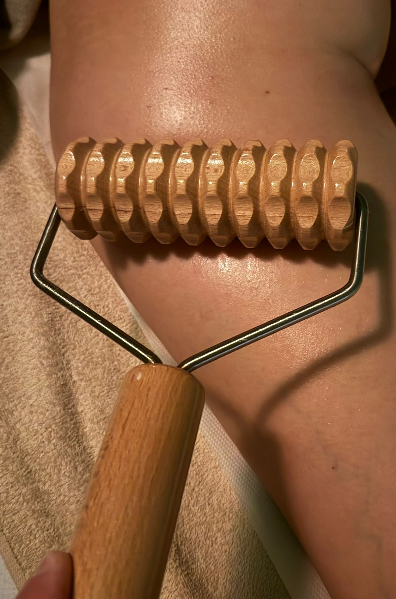

Konzultace
Projdeme, co řešíte, a jestli nejsou důvody masáž odložit.

Technika, která místo rukou používá tvarované dřevěné nástroje. Pevný, rytmický tlak podporuje lymfatický systém a prokrvení podkoží. Ocení ji ti, komu klasická masáž přijde málo.
Projdeme, co řešíte, a jestli nejsou důvody masáž odložit.
Manuální rozehřátí partie, než přijdou nástroje.
Válečky a tvarované dřevo, rytmická práce v sériích tahů.
Maderoterapie funguje v sérii. Domluvíme, kolik a jak často.
| Varianta | Cena |
|---|---|
| 60 minut | [DOPLNIT] Kč |
| série — balíček | [DOPLNIT] Kč |
Platba hotově, převodem i benefitními poukazy (Edenred, Benefit plus). Zrušení termínu prosím alespoň 24 hodin předem.
Jednorázově to smysl skoro nemá. Obvykle se doporučuje série — konkrétní počet probereme podle toho, co řešíte.
Při správně vedeném tlaku ne. Krátkodobé zarudnutí je normální a do pár hodin zmizí.
Čerstvá poranění, křečové žíly v místě aplikace, těhotenství, onkologická léčba nebo záněty — ozvěte se předem a řekneme si to.
Tlak je pevnější než u klasické masáže, ale nastavuje se tak, aby byl snesitelný.
Termíny jsou omezené — jsem tu jen já a jedno lehátko. Vyplatí se rezervovat dopředu.